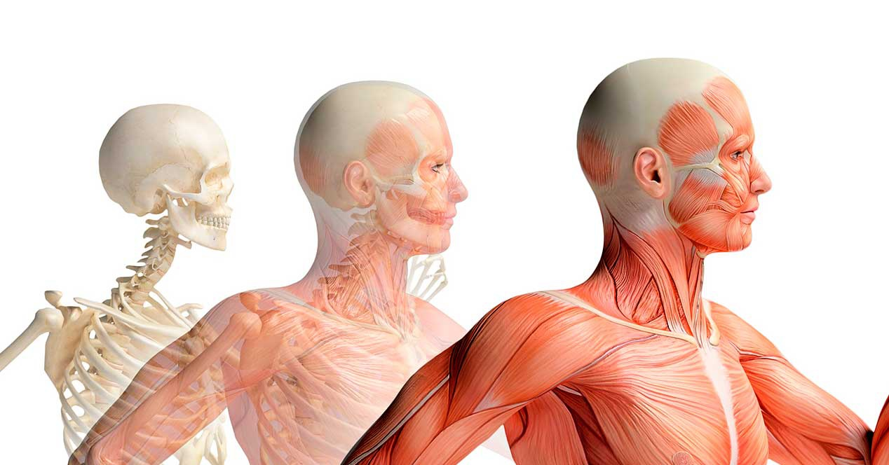
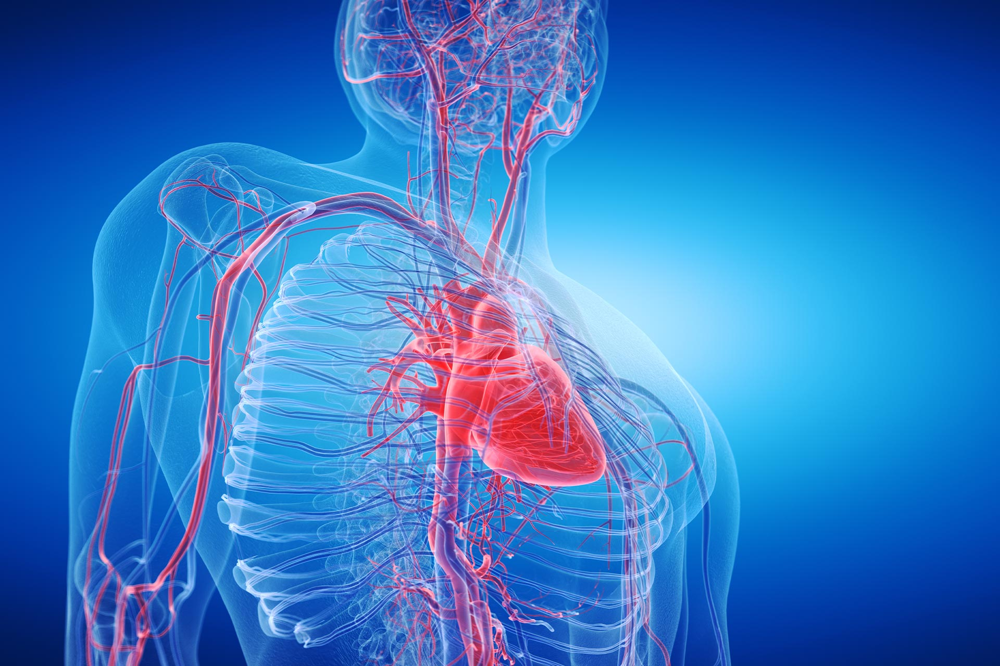

Anatomía
La anatomía es una ciencia que estudia la estructura de los seres vivos, es decir, la forma, topografía, la ubicación, la disposición y la relación entre sí de los órganos que las componen.
La anatomía se basa ante todo en el examen descriptivo de los organismos vivos, la comprensión de esta arquitectura implica en la actualidad maridaje con la fisiología(en lo que se denomina anatomía funcional) y forma parte de un grupo de ciencias básicas llamadas "ciencias morfologícas" que completan su área de conocimiento con una visión dinámica y pragmatica.
"Aparatos y sistemas de la anatomía humana"
Aunque muy frecuentemente los términos "Sistem" y "Aparato" se usan como sinónimos, en la práctica no lo son. En el contexto del cuerpo humano, un sistema hace referncia a un conjunto de órganos semejantes por su origen y estructura, cuyo objetivo es trabajar conjuntamente para desempeñar una función fisiológica específica en el cuerpo.
Los sistemas del cuerpo humano agrupan órganos que están formados por tejidos similares. Por otra parte, un aparato es un conjunto de sistemas que contribuyen a cumplir una misma función, y su organización suele ser más compleja que le da un sistema. Además, a diferencia de los sistemas, los aparatos están compuestos por órganos cuyos tejidos son diversos o heterogéneos.
Anatomía Artística
El descubrimiento la anatomía humana está íntimamente ligado a la anatomía artística. Se puede concretar todavía más y afirmar que los conocimientos de la anatomía humana y la artística discurren paralelos a la historia del desnudo al arte y en la vida cotidiana. Los griegos no tenían tanta necesidad de diseccionar cadáveres (a pesar de las vivisecciones de Herófilo de Calcedonia, quién trabajó en la Alejandría helenística en tiempo del Imperio Romano), para efectuar representaciones figurativas del cuerpo humano como tuvieron que hacer mil quinientos años más tarde los científicos-artistas del Renacimiento. Puesto que los antiguos griegos, desde pequeños, contemplaban los nudo de sus jóvenes atletas y de sus hetairas. Aun así, no se tiene que exagerar este vínculo. La representación artística tiene su propia trayectoria, independiente de la trayectoria de la ciencia, a pesar de las indiscutibles coincidencias que se encuentran, como en los estudios de Leonardo da Vinci. El ejemplo del desnudo griego lo pone de manifiesto: los curos eran un modelo de representación artística arcaizante y un poco hierática, pero no un modelo de representación anatómica. La representación anatómica de los curos estuvo idealizada o esquematizada durante doscientos años, desde el Estilo arcaico (650 a. C.) hasta Fidias y Praxíteles (c. 450 aC), y el periodo del clasicismo helenístico que después se extendió a las artes etruscas y romanas; en estas dos artes llama la atención que la búsqueda dé a veces un descarnado realismo; los bustos etruscos y romanos eran inicialmente esculturas en terracota o en bronce que obtenían de los moldes de mascarillas funerarias, puesto que el paradigma de estas culturas era suponer que se preservaba algo de la vida del difunto al representar de la manera más fiel posible sus facciones.
TEMAS BIOLOGÍA
Subdivisiones
Anatomía Topografíca: Se estudia por divisiones especiales. También llamada regional.
Anatomía Quirúrgica: Consiste en el estudio de la estructura y morfología de los tejidos órganos del cuerpo aplicados a la círugia.
Anatomía Comparada: Copara la anatomía del cuerpo humano con los animales.
Anatomía Microscopica: Predominio de la utilización de microscopio, llamada también histoloía.
Anatomía Macroscópica: Estudia la forma de las estructuras, no se utilizan microscopio.
Anatomía Descriptiva: Separa el cuerpo en sistemas: También denominada sistemático.
En el cuerpo humano se identifica en distintos sistemas y aparatos, entre los cuales están:
Sistema endocrino:
Es el encargado de la producción de hormonas que regulan el metabolismo, la función sexual y el crecimiento del organismo. Está formado por las glándulas endocrinas (producto de hormonas), ubicadas en distintas partes del cuerpo.
Sistema Nervioso:
Es el encargado del procesamiento de los estimulos y la generación de las respuestas adecuadas (procesos sinápticos y de comunicación del cerebro). Esta formado por el sistema nervioso central (encéfalo y médula espinal) y el sistema nervioso periférico (nervioso que recorren todo el cuerpo).
Sistema esquelético u óseo:
Es el encargado de darle estructura, sostén y movilidad al cuerpo. Está formado por 260 huesos.